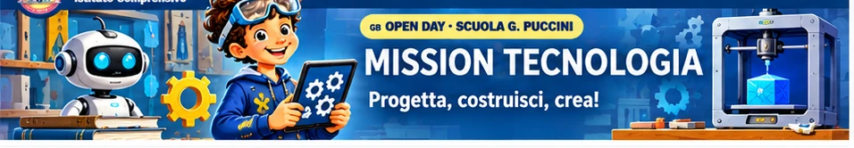

Costruisci in 3D! · Versione 7.0
Diventa inventore: scegli un percorso, assembla i pezzi e osserva la tua creazione da ogni lato.
Casa: costruisci le pareti, aggiungi il TETTO COMPLETO e poi scegli PANNELLO o SENSORE e tocca il tetto. Robot: inserisci prima il corpo, poi testa, braccia e gambe. Trascina per ruotare la vista.
Seleziona un elemento per cominciare.
Laboratorio di progettazione digitale per l'Open Day · Modelli ispirati ai mattoncini da costruzione, senza affiliazione con LEGO. Per visualizzare il 3D serve una connessione Internet al primo caricamento.